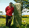

The Project (CISP) is a joint project of the Department of History and the Institute of Archaeology under the direction of Prof. Wendy Davies in collaboration with Prof. James Graham-Campbell. The project was funded by the Humanities Research Board, the Arts and Humanities Research Board and University College London. The project currently has two research fellows: Kris Lockyear and Mark Handley.
CISP is undertaking a collaborative, interdisciplinary study of Medieval Celtic inscriptions. One of its main objectives is the compilation of an accessible, comprehensive and authoritative database of all known inscriptions. By bringing this material together in one place and making it readily available our goal is to turn what is a largely untapped resource into usable material. Additionally, field work has been undertaken by Katherine Forsyth (former Research Fellow), Kris Lockyear, Mark Handley, Paul Kershaw (former Research Fellow), James Graham-Campbell and Wendy Davies on the material from Brittany and the Channel Islands which will lead to a published corpus.
The scope of the project is the Celtic-speaking regions of the early middle ages, (Scotland, Ireland, Wales, Brittany, the Isle of Man, and parts of western England, in the period approximately AD 400-1100). Included are all stone monuments inscribed with text, whether in the Celtic vernacular or Latin, in the Roman alphabet or ogham (but excluding runic inscriptions). This material constitutes primary data of unique evidential value to historians, archaeologists, historical geographers, palaeographers, epigraphers, art historians, medieval Latinists and Celtic linguists.
CISP's primary objectives are:
Information for the database is being drawn from a variety of sources including published and unpublished work and internet resources. The database incorporates details of present and former location(s), physical characteristics, readings and expansions, previous work, bibliographic information and, where available, images. The electronic storage format will allow periodic updating of the database as research progresses in the future. Data entry was completed in 1999. Its authors are Katherine Forsyth, Mark Handley, Paul Kershaw, Kris Lockyear, with Wendy Davies, James Graham-Campbell and John-Paul Wilson.
The database was originally implemented in Visual dBase 5.5, and has a fully relational data structure. A data entry application was written by Kris Lockyear to enable easy and consistent data entry. Subsequently, the database was transferred to Microsoft Access, and an application written by Mike Gahan (database consultant) to create web pages of the data. P>The database is available over the World Wide Web in a preliminary version; corrections and additions will be incorporated and the search facility enhanced in future releases.
The volume, entitled The Inscriptions of Early Medieval Brittany,, went to press in January 2000 and will appear by December 2000. It was written by Wendy Davies, James Graham-Campbell, Mark Handley, Paul Kershaw, John Koch, Gwenaël Le Duc and Kris Lockyear, and is being published by Celtic Studies Publications. The volume contains a parallel English and French text.
Here are some photographs of the Breton material
taken during fieldwork in May 1997.
Kris
Lockyear
Institute of Archaeology, UCL
Email: k.lockyear@ucl.ac.uk
{kind=link}
{kind=link}
{kind=link}